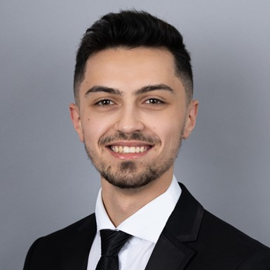

Aykhan Islamzade
Engineer and developer

Summary
I am a fresh master of engineering graduate living in Budapest, Hungary. I speak English, Russian, Turkish and basic Hungarian. I have great interest and passion for development, engineering, research and development. In general, I am a hardworking and very committed individual to my tasks and responsibilities.
Languages
- Azerbaijani - Mother Tongue
- English - Bilingual/Proficient (C2)
- Turkish - Advanced (C1)
- Russian - Upper Intermediate (B2)
- Hungarian - Intermediate (B1)
Education
Mechatronics Engineering MSc. | Obuda University, Hungary [September 2021 - July 2023]
- Intelligent Robot Systems Specialization
- Cumulative GPA: 4.20/5.0
- Diploma grade: 3.75/5.0
Mechatronics Engineering BSc. | University of Debrecen, Hungary [September 2017 - January 2021]
- Industrial Automation Specialization
- Cumulative GPA: 4.22/5.0
- Diploma grade: 4.35/5.0
Secondary and High School | Baku Oxford School in Shamkir, Azerbaijan [November 2010 - June 2017]
- High School Education, graduated with “Attestat” - State certificate of Secondary (High school) education
- Cumulative GPA: 4.93/5.0
Technical skills
HARDWARE
- Pneumatics and Hydraulics(Festo, Bosch Rexroth devices)
- Electrical design test and troubleshooting
- Electronic bench testing
- Power Electronics
- Industrial Automation Design
SOFTWARE
- HTML, CSS, Javascript, Node, React, PostgreSQL, Web3 and DApps
- Independent user of MS Office apps
- PLC programming (LD, FBD, ST, IL, SFC)
- Programming with LabView (experience with NI devices)
- MCU programming (Arduino, Dave IDE)
- PCB design (KiCad, Altium designer)
- 3D modelling (AutoCAD, Inventor, Solid Edge, CATIA)
- Intermediate level in C++ (experience with VS Code, CodeLite, DevC++)
Work Experience
Infineon Technologies Kft. | Electrical System Engineer | Internship [September 2022 - August 2023]
Supporting the R&D Team with
- Designing electrical schematics
- PCB design and layout
- MCU programming
- Updating existing electrical designs as required
- Power electronics tasks
University of Debrecen | Industrial Process Automation Engineer| Internship [July-August 2020]
- Full 6-week Internship at Department of Mechatronics, Engineering faculty of University of Debrecen
- Main aim of Internship was building and programming an automated process with PLC on MPS machines
Soft kills
- Outstanding communication ability
- Solid presentation skills
- Analytical and system mindset
- Quality focused and responsible
- Willing and motivated to learn
- Comfortable with individual and group work
Extracurricular
Vehicle Informatics course - CAN-BUS System prototype, Project leader | Obuda University, Hungary [February-June 2022]
Participation at 8th Robotic Championship at University of Oradea, Romania [April 2018]
Logistics team member at Baku City Circuit, F1 Azerbaijan Grand Prix 2017, Azerbaijan [June 2017]
Other